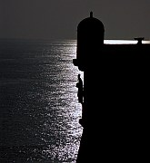
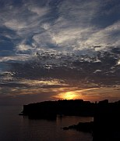
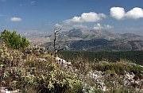

Disclaimer: These pages are not actively maintained, and some of the practical information on the site is out of date. I am working on a new version of the site that will focus more on my photos and memories of travel in Southeast Europe, and less on practical details that too easily become obsolete. In the meantime, please treat the information here with caution.
Cathedral

St Blaise Statue, City Walls
Dubrovnik
Dubrovnik is one of the most famous tourist attractions in the Balkans, and with good reason. Although you could see the main sights in a day, it's worth lingering for longer to appreciate the city from various angles and at different times of day, and to investigate the unique history of the city-state of Ragusa.
Stradun (Placa)

Sunset over the city
The Walled City
Although the modern city stretches for several kilometres along the coast, almost everything of interest is within the Old Town, which is only a few hundred metres across. A walk around the city walls is an essential part of any visit to Dubrovnik. The circuit is a little over 2km long and is punctuated by a number of towers and fortresses. From here you can appreciate the strangely pragmatic nature of Dubrovnik's beauty, with the immense defensive ramparts enclosing a rigid grid of streets - quite different from many other towns along the coast. This difference is due to the near total destruction of the city by an earthquake in 1667. Dubrovnik wasn't the first or last Balkan city forced to reinvent itself after a natural disaster, but its reconstruction was almost certainly the most successful. The orderly rows of rather austere stone buildings somehow add up to much more than the sum of their parts.
Once you have had your fill of the view from the walls, it's time to explore the city inside. The two main gates of the city, Pile and Ploče, are linked by the old town's only wide street. Known as either Stradun or Placa, it is one of the most memorable city streets in Europe, and a stroll over its polished flagstones is a pleasure at any time of day or night.
At the Ploče end of Stradun some of the city's most important buildings are grouped around an irregularly shaped square. The Sponza Palace and Rector's Palace are among the few Renaissance buildings to survive the earthquake - the latter contains a museum. There are two Baroque churches, St Blaise and the impressively domed Cathedral. The square is overlooked by a bell tower, to which a rather odd-looking digital clock has been added: the hour is displayed in Roman numerals. The Dominican and Franciscan monasteries are just inside the walls at opposite ends of the city; the cloisters are pleasant places to take a break from sightseeing. The pharmacy in the Franciscan monastery claims to be the oldest in the world, although I seem to have heard that claim in several other European cities too.
It's worth dragging yourself away from Stradun and the main sights to wandering through the narrow alleys of the old town. As you approach the higher ground near the sea walls the grid pattern begins to dissolve and the character of the city changes - it's just as enjoyable but in a different way. Whenever I have explored these lanes I have come across far more local residents and cats than tourists. Spend enough time in the old town and you may find yourself being persuaded that the city-state is the most perfect form of human government, and that cars should be excluded from all cities everywhere.
Some visitors to Dubrovnik feel that it is too crowded with tourists to be thoroughly enjoyable. It's true that the old city is very small and the number of people who want to see it is very big. If this matters to you, the most obvious course is to visit outside summer. I have been in Dubrovnik during May and October and had no trouble finding quiet moments of reflection, especially in the evening. One thing that genuinely can make the place feel like an overcrowded theme park, even in off season, is a visit by a large cruise ship - the number of passengers on some of these ships can swamp a small town like Dubrovnik. The solution: spend the day on Mount Srđ or Lokrum (see below) - the cruise will probably have moved on by the following day.
From the Lokrum Ferry

View from Mount Srđ
Outside the Walls
To fully appreciate the architectural ensemble of the city and its walls, a viewpoint outside Dubrovnik is required. Any visit to Dubrovnik will be enriched by viewing the city from above, by visiting Mount Srđ, or from the sea, by taking a ferry to Lokrum or Cavtat.
You can't spend long in Dubrovnik without noticing Mount Srđ looming over the city. Despite its prominence few tourists seem to visit the summit, which is a pity as it really helps to put the city's history into context. Not surprisingly there are wonderful views of the walled city far below, but almost as interesting is the sight of the barren mountains of Herzegovina in the other direction - it's clear that unlike many great seafaring towns, Dubrovnik never benefited from a fertile hinterland. It doesn't seem surprising that the men of Dubrovnik were drawn to the sea; from up here the calm turquoise waters appear far more navigable than the bare white rocks.
A serpentine footpath winds up to the summit from the main road above the town (Jadranska Turistička). Although it may feel like a suburban stroll, don't underestimate the 400m climb, especially in warm weather - bring plenty to drink. Once at the top, try to ignore the tangled mess of defunct cable car equipment and ruined buildings - concentrate on enjoying the views. There is also a paved road to the summit so presumably it would be possible to get here by taxi.
More views of the city can be enjoyed on the 15-minute boat ride to Lokrum Island. The island is a nature reserve, and apart from a disused monastery there are few buildings. There are a number of paths through lush and fragrant woodland, a drastic contrast to the rugged slopes of Srđ. The fortress at the highest point of Lokrum has views of the whole island and of Dubrovnik.
A longer ferry ride brings you down the coast to Cavtat. It's a relaxing seaside town without a whole lot to see, but you could have a look at the Račić Mausoleum in the cemetery, a major work by Croatia's great sculptor Ivan Meštrović.
If you want to mix culture and recreation, Dubrovnik offers several opportunities to swim in the Adriatic, whose waters are perfectly clear even in this relatively urban setting. As usual in Croatia, don't expect your feet to be caressed by soft golden sand: pebbles rule. Perhaps the most evocative bathing place is the small beach just beyond the Ploče Gate, within site of the walls - hang around until evening to see the sun setting over the city. The Lapad Peninsula and the resorts between Dubrovnik and Cavtat also have beaches, and many people swim at the rock beaches of Lokrum Island.
A numbers of interesting destinations can be visited on day trips from Dubrovnik, for example Mljet Island and the Elaphite Islands. International excursions are also possible, to Mostar in Bosnia and Herzegovina and the Bay of Kotor in Montenegro. Naturally you will get more out of both countries if you can stay a few nights, but a day trip from Dubrovnik is certainly worth considering. If you want to avoid fussing with bus timetables, all these places can be visited on organised excursions which you will see advertised around Dubrovnik. Bus timetables to Montenegro in particular mean that the organised tour is probably a much better option.
Practicalities
Dubrovnik once had a train station but sadly the last departure was in the 1970s. The bus station, which is really just a collection of prefabs, is about 2km north-west of the old town. There are about 15 daily buses along the coast to Split, many of which continue to other points in Croatia. There are also international connections to Mostar, Sarajevo, Kotor and Ulcinj. The ferry terminal is a short distance further north in Gruž. This is the starting point for the main coastal ferry from Rijeka (two to four weekly depending on season); the Dubrovnik - Korčula - Stari Grad - Split section is traversed in daytime in both directions. Ferries also head to the Elaphite Island and Mljet.
Dubrovnik Airport receives a wide variety of charter and scheduled flights in summer, and much more limited services during the rest of the year. Croatia Airlines' Dubrovnik-Zagreb flight is one of the few domestic flights anywhere in the Balkans that is used regularly by tourists. It cuts out a 12-hour overland trip, and tickets can be reasonably cheap if you book in advance. However, if you are considering flying because you have seen the main sights on the way south from Zagreb and want to avoid retracing your steps, do think about returning via Mostar and Sarajevo.
Dubrovnik has a very good local bus system, which means that it's quite possible to enjoy the old town while staying in Lapad or Cavtat. They are also useful for getting to the bus station and port (it's possible to walk but it's a bit of a slog over an intervening hill). Local ferries (to Lokrum and Cavtat) leave from the small harbour just outside the eastern wall of the old city.
See the Links page for more information about Dubrovnik's airport and bus station, the Jadrolinija ferry timetable, and organised excursions.
Accommodation in Dubrovnik is generally a bit more expensive than in other coastal Croatian towns. As you would expect, prices fluctuate a lot during the year, especially for stays of less than three nights (in the off season I have found that room owners are generally happy to take a guest even for one night). If you arrive at the bus or ferry port you are certain to be met by people offering rooms; this can seem odd if you aren't used to it but is perfectly normal here. I have accepted one of these offers on several occasions and it has always worked out well - just don't feel pressured into taking something you don't like. The rooms are often in the Lapad area; if you want a room within the old town, which can be very atmospheric, try hanging around the Pile Gate. Of course you can arrange rooms in advance or through several travel agencies in Dubrovnik.
What they said about Dubrovnik...
Dubrovnik improves as it ages, and I think the visitor appreciates it more as he ages. Every time one visits it the spells are recast more potently.
- J.A. Cuddon, The Companion Guide to Yugoslavia, 1968
The little city of Dubrovnik, ex-Ragusa, bears itself within the glorious circuit of its walls as though it still rules its own fortunes.
- Jan Morris, Fifty Years of Europe, 1997
In this celebrated city ordinary life goes on: women hanging out their washing on exquisite wrought-iron balconies high above the narrow streets - children laughing and squabbling - men putting out garbage-sacks beside time-worn stone steps - cats dozing on window-sills - people hurrying off to work carrying briefcases or toolkits, ascending steep flights of steps with an agility rarely seen nowadays in motorized cities.
- Dervla Murphy, Through the Embers of Chaos, 2002
More photos of Dubrovnik in my Croatia Galleries